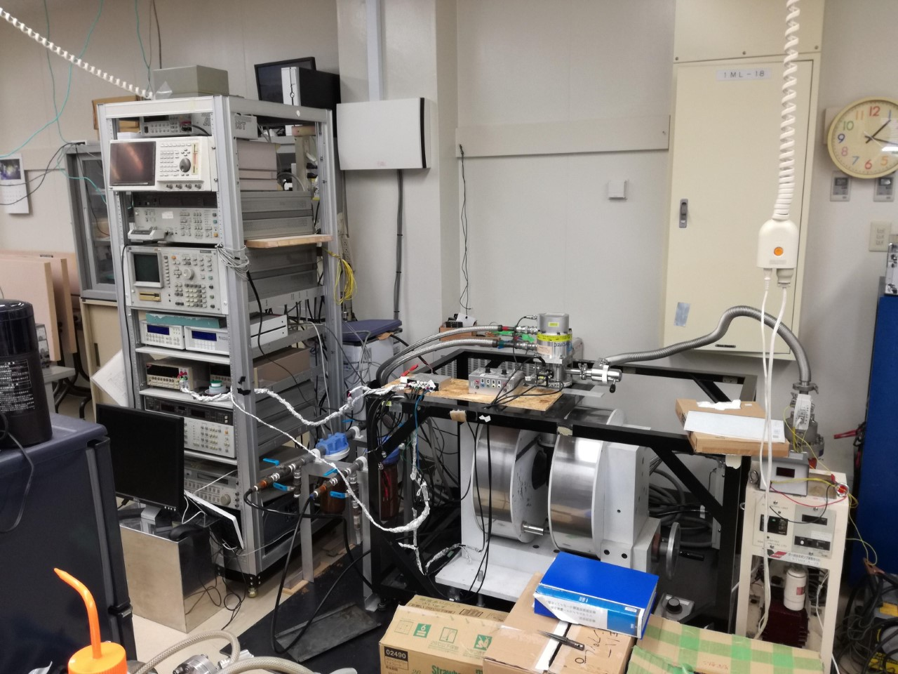
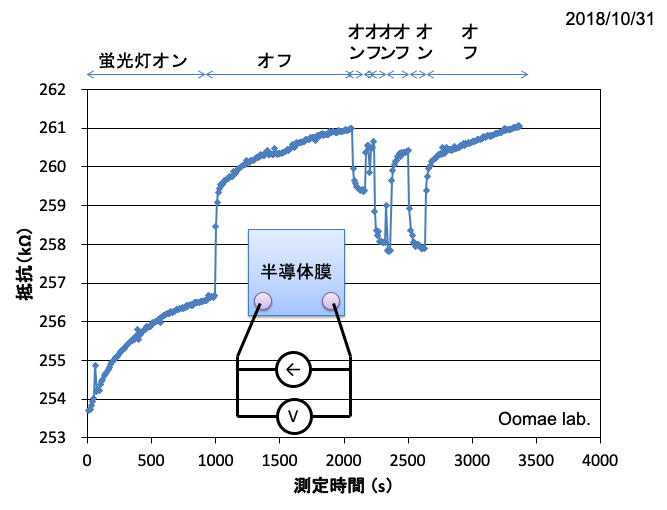

本研究室では、電子材料・磁性材料・光学材料に関する研究を行っています。
このページは来年度、５年生で卒業研究のために研究室に入る電子工学分野の４年生向けに書かれています。当分野の学生は、３年生までは主に電子回路や電気回路、プログラミングについて学んできており、 電子材料を学ぶのは４年生の後期になってからです。そのため、電子材料について興味をもつというのは難しいのだろうと思います。できるだけ平易に研究紹介をしたいと思います。


硫化すずは真っ黒な半導体で光を吸収する特性に優れているため，太陽電池の光吸収材料として注目されています。 理論上は２５％から３０％のエネルギー変換効率があるはずなのですが，いまだに世界のトップデータでもエネルギー変換効率は４％程度しかありません。 その理由は何なのか？ 原因を取り除くことはできるのか？ を明らかにすることを目的に研究を行っています。
使用する実験装置の紹介分子線エピタキシー装置

高真空の成長炉の中で、硫化すず薄膜を作るための装置です。
ロードロック室があり、成長炉を高真空に保ったまま、試料の出し入れができます。
目的とする物質の原料を加熱蒸発させ、土台となる半導体結晶基板上に蒸着します。
真空度が高いため、蒸発した原料は、ビーム状になり基板に向かって飛んで行くため、分子線と名前がついています。

真空中で金属を加熱し、蒸発または昇華させることで半導体基板上に金属の薄い膜（100nm～1μm）を作製します。
また、1000℃近くで昇華する物質であれば、酸化物なども可能です。
油回転真空ポンプと油拡散ポンプの２つの真空ポンプからなり、高真空を作るために用います。
真空蒸着だけでなく真空中熱処理などにも利用。
電気炉

薬品や試料を加熱するために用います。最高で900度まで加熱することができます。粉末やゾルゲル膜を焼結するために利用しています。
上の電気炉は、元々On/Off制御だったものをPID制御できるように、温度調整器を交換しました。
また、リレーも機械式からソリッドステートリレーに変更しました。
金スパッタ装置
画像準備中
硫化すず薄膜の電気特性を測定する時に，金の電極を形成するために使用します。
真空蒸着装置

高真空中で、金属原料を載せたタングステン・ボートやモリブデン・ボートに数十アンペアの電流を流し、発生したジュール熱で金属を気化させます。
気化した金属は、真上に備えたシリコンなどの基板に蒸着されます。高真空は油回転ポンプと油拡散ポンプの２つで作ります。
使用用途としては次のとおりです。
● 半導体への電極形成（アルミニウム電極など）
● 太陽電池材料である硫化すずを作るためのすず薄膜の作製(2016年)
● 透明n型半導体である酸化亜鉛薄膜の作製(2016年)
改造履歴
● 基板ヒーターの取り付けた（2016年6月)
● 基板の位置を5 cmと10 cmの2つを選択できるようにした（2016年11月)
● 基板ヒーターに熱電対を取り付け、温度のモニタリングができるようにした（2016年11月)
大気中で温度を計測して、所定の温度になる電圧を調べたのだが、真空中に入れると100℃も違うことがわかりました。
Van der Pauw法による抵抗率測定装置

半導体や金属薄膜の抵抗率を測定する方法のひとつにVan der Pauw法があります。 この装置はUSBでパソコンとつながっており、半自動で抵抗率を測定できます。 自作したもので、PIC、リレー、計装アンプでできています。 パソコン側の測定プログラムはVisual Basic2008で作成しました。
低温ホール効果測定システム

電磁石により最大1Tを半導体試料に印加できる。また冷凍機により10K－300Kの温度制御が可能。

作製した試料を保管する容器です。半導体や金属の劣化を防ぐために中は真空になっています。複数台所有。
蛍光灯の光でキャリアの数が変化している？
作製した半導体薄膜に電極を付けて，電気抵抗を測定した例

部屋の蛍光灯をオン・オフすると，電気抵抗値が上がったり下がったり。そもそも徐々に抵抗値が上がっていることも問題なのですが。基本的に半導体の電気特性を測る時は暗闇が一番だと思います。
半導体薄膜の電気特性の温度依存性を測る時，温度コントローラの表示値は安定していても，試料がその温度で安定しているとは限らない？
温度を変えてホール効果測定をすると，何度やっても値が変化することがあります。しばらく待つと安定するけれど，いつまで待てばいいのか．．．。
上の例だと２０分待てば安定してます。これでも長いけれど，もっと長いなら，装置から取り出すのは面倒だけれど，一度開けて，試料と試料台の接触を見直すといいかもしれません。
(C) 2014- 釧路工業高等専門学校 創造工学科 エレクトロニクスコース 機能材料研究室. All rights reserved.